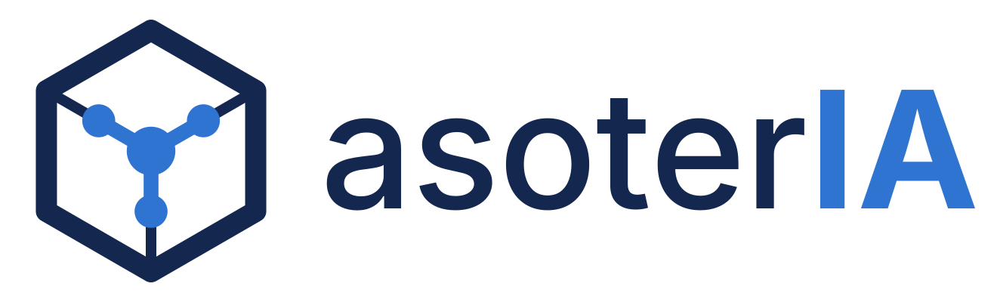

Les avocats veulent utiliser l'IA générative pour lire, résumer et rédiger. Mais ils sont tenus au secret professionnel : envoyer les pièces d'un client à un service d'IA en ligne pose un problème de confidentialité. Les petits cabinets n'ont pas de service informatique pour installer une solution locale. Et une IA générale cite mal ses sources, ce qui est dangereux pour un avocat.
Premiers échanges. Un étudiant en droit passé par des stages au tribunal confirme que le milieu cherche à utiliser des LLM tout en gardant les données privées, et que même les meilleurs modèles restent vagues dans leurs citations sans lien avec de vrais textes. Dans un cabinet de 8 avocats, le secrétariat indique que les documents sont dans un logiciel de gestion qui intègre déjà un assistant IA, et que l'achat informatique passe par le comptable.
Preuves : [nombre] entretiens avec des avocats du 2 au 4 novembre 2026, [nombre] avec des spécialistes, [nombre] marques d'intérêt écrites, [nombre] inscrits sur la liste d'attente.
Une box posée dans le cabinet réunit documents, agenda, contacts et coffre-fort de mots de passe, avec un assistant IA local qui :
Tout fonctionne câble réseau débranché. Chaque connexion sortante (mise à jour, support, sauvegarde hors site) est optionnelle, chiffrée, autorisée par le cabinet et inscrite dans un journal d'audit.
Nous assemblons des briques libres (Nextcloud, Vaultwarden, restic, Caddy). Notre travail : l'installeur, l'assistant qui croise les services et cite ses sources, le tableau de bord, le journal d'audit, le pack métier et le service sur place.
Qui paie : l'associé, ou le comptable du cabinet. Qui utilise : les collaborateurs, les assistants et l'associé.
| Acteur | Offre | Prix | Limite pour un cabinet d'avocats |
|---|---|---|---|
| Olares One | Box cloud et IA locale sur les fichiers ; série A de 45 M$4 | 2 899 à 3 999 $3 | Vise passionnés et développeurs, pas de service sur place ni de spécialisation métier |
| Start9 | Serveur personnel, support à vie inclus5 | 749 à 1 049 $5 | Orienté souveraineté et Bitcoin, demande des compétences techniques |
| ZimaCube | NAS « cloud personnel » avec applications6 | 649 à 1 099 $6 | Orienté stockage et créateurs de contenu |
| IA intégrée aux logiciels de cabinet | Assistant ajouté au logiciel de gestion déjà utilisé | [à sourcer] | [hébergement et confidentialité à documenter] |
| Nous | Box, installation et support en France, pensée pour le secret professionnel | voir offres | Réponses sourcées, rien ne sort du cabinet, aucune compétence technique demandée |
Le revenu récurrent est le cœur du modèle : la box ne se vend qu'une fois. L'abonnement comprend les mises à jour de sécurité suivies, les mises à jour des modèles et du pack métier, la sauvegarde hors site chiffrée côté client, l'intervention sur place et le remplacement en cas de panne.
| Offre (HT) | Box | Installation | Abonnement |
|---|---|---|---|
| Solo, 1 à 3 pers. | [ ] | [ ] | [ ] |
| Cabinet, 4 à 10 pers. | 3 500€ | 500€ | 79€ / mois |
Prix en cours de validation à partir du coût matériel réel et des entretiens.
Coût d'acquisition d'un cabinet : [ ]
| Rôle | Membre |
|---|---|
| Business : marché, ventes, finance | [Nom, école] |
| Plateforme : box, installeur, sauvegardes | [Nom, école] |
| IA : modèle local, recherche, citations | [Nom, école] |
| Interface : tableau de bord, site | [Nom, école] |
| Sécurité : chiffrement, audit, mesures | [Nom, école] |
| Année 1 | Année 3 | Année 5 | |
|---|---|---|---|
| Cabinets actifs | 20 | 200 | 530 |
| Chiffre d'affaires | 89 k€ | 613 k€ | 1 137 k€ |
| Marge brute | [ ] | [ ] | [ ] |
| Effectif | 4 à 6 | 12 à 15 | 15 à 25 |
Seuil de rentabilité : [année]. Sans résiliation à ce stade. Extensions : experts-comptables en année 2, santé en année 3 via un partenaire certifié HDS.
| Besoins | Montant | Ressources | Montant |
|---|---|---|---|
| Premier lot de box | [ ] | Préventes des pilotes | [ ] |
| Développement V1 | [ ] | Aides et prêts d'honneur | [ ] |
| Prospection | [ ] | Apports des fondateurs | [ ] |
Accompagnement visé : Next Step de l'ENSIIE et incubateur IMT Starter. Levée d'amorçage seulement après les pilotes, pour recruter et financer le stock.